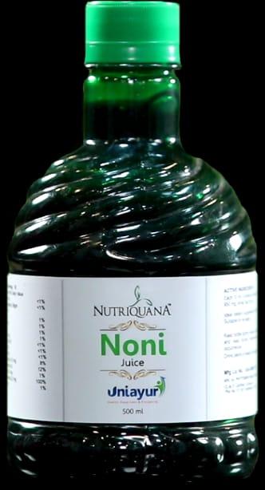

Uniayur Products
- Spirulina
- Noni Juice 
- Flax
- shilajit
- Calcium
- Endura
- Diabosys

Nutriquana Spirulina is a natural source of 100 types of major nutrients approxomately such as protein, carbohydrate, 13 vitamins, 13 minerals, 4 natural phytonutrients, 8 cerotanoids & 18 amino acids. It also contains 3 natural color pigments. According to WHO Spirulina is the greatest super food on earth and an ideal food supplement for the human body. It provides daily nutritional value for the human body and strengthens the immune system. It improves the metabolic rate and reduces acidity. It is a natural source of antioxidants that helps to reduce the growth of cancer cells. It also helps in detoxification of the body.
Nutriquana Noni whose botanical name is Morinda citrifolia has three main alkaloids called pro-xeronine, and pro-xeroninage. It contains Enzymes, Anthraquinone and Polysaccharides in abundance in the Noni which regulates the function of the cell, generate of new cells and repair the damage cells. It also controls the flow of chemicals, secretes hormones and improves the digestion. Nutriquana Noni behaves like anti-bodies. Noni is anti-histaminic, anti-inflammatory and anti-bacterial. It contains anti-ageing properties. Nutriquana noni is also full of vitamins and minerals.

Nutriquana Flax is known as linseed and its oil known as linseed oil. It is a rich source of Omega-3 & Omega-6 fatty acids. Flaxseed oil is a natural source of Vitamin E. Flax seed has 75 to 800 percent more Lignan (the natural antioxidants) than other vegetables and grains. Omega-3 helps lower Cholesterol & blood triglycerides and Lignan have low incidence of breast and colon cancer. It also helps in the development of retinal and brain cells.
Nutriquana Shilajit is a natural amazing herb. It is very useful in treatment of Skin disease, Chest disease, Piles, Reducing fat, Constipation, Intestinal Worms and general Weakness.
Nutriquana Calcium is formulated at the international standards which contain 625mg Calcium Carbonate with 125 units of Vitamin D-3 and Sodium free. Calcium is the most abundant mineral in the human body. More than 99% of total body calcium is stored in the bones and teeth where it functions to support their structure and the remaining 1% is found throughout the body in blood, muscle, and cells of soft tissue.

Nutriquana Endura is a herbal preparation and very useful in sexual weakness, decrease in sexual desire, decrease Energy level, Night Discharge (Nocturnal Emission), Erectile Dysfunction, Depression & anxiety, Premature Ejaculation, early aging, decrease in weight Mental imbalance, increase Stamina, Energy & Endurance, Stabilize Testosterone Level..
Human Body needs energy to work and this is obtained from Glucose when it is entered into
the human cell. The Glucose enters into the cell when the Pancreas releases Insulin into
the blood. Deficiency of Insulin increase sugar level in the blood so that glucose does not
enter into the cell. This may be a cause of many disease in the body such Eye Disease,
weakness in Kidney, brain and heart.
Action of the formulation: Vasant Kusmakar Ras and Gold ash and other ingredient of
Nutriquana Diabosys activates Pancreas and helps to release Insulin to the Human Body. It
works on both Type I and Type II diabetes.
Note: According to W.H.O. there will be 300 million diabetes Patients.